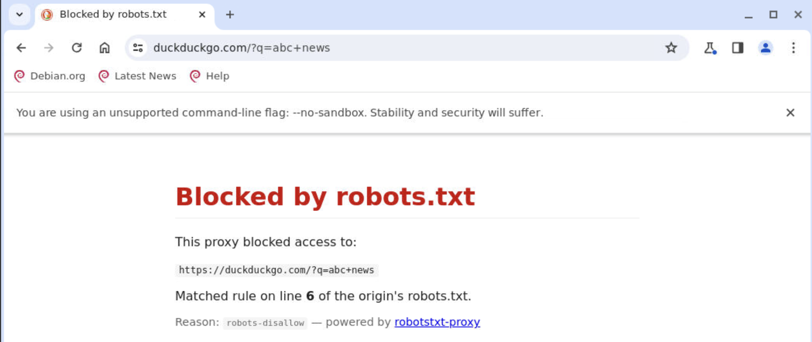
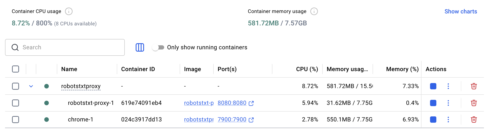
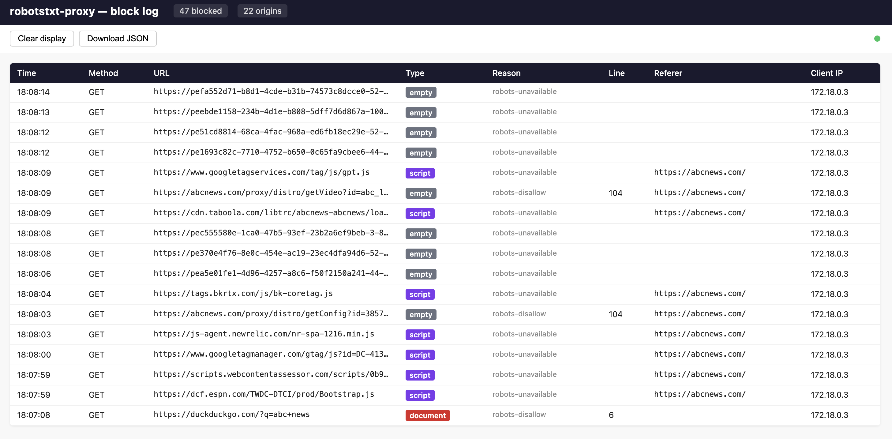
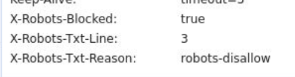
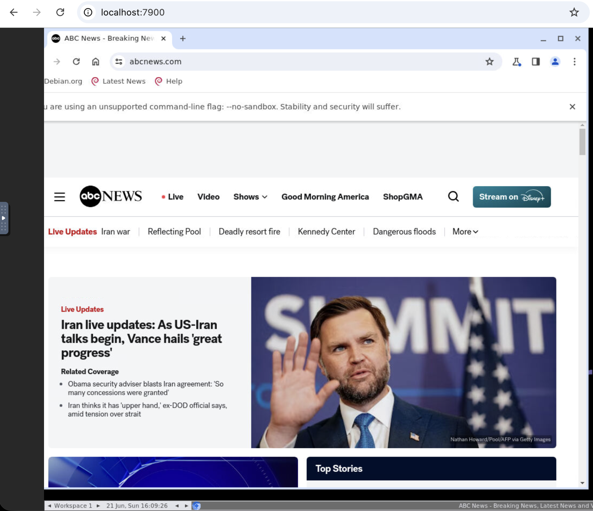

Block by robots.txt
— automatically.
A forward HTTP(S) proxy that allows or blocks every request based on the target site's robots.txt. Point your browser at it, watch a live dashboard, inspect blocked resources in DevTools — zero configuration needed.
How it works
For every outgoing request the proxy fetches /robots.txt from the target origin (cached for 1 h), then uses Google's reference robots.txt parser (google-robotstxt-parser) to decide whether the URL is allowed for the request's User-Agent.
| Traffic | What the proxy sees | Filtering |
|---|---|---|
| Plain HTTP | full URL + path | full path-based rules |
HTTPS host-only (default) |
hostname only (path is encrypted) | host-level only — blocked if / is disallowed |
HTTPS mitm |
full URL + path (TLS intercepted) | full path-based rules, same as HTTP |
Fail behaviour
When robots.txt can't be retrieved:
| Status | Behaviour |
|---|---|
2xx | Rules applied normally |
4xx (no file) | Allow — no restrictions |
5xx / timeout / network error | Block — assume restricted |
Smart block responses
Blocked resources get the least disruptive response based on the Sec-Fetch-Dest header — no broken images, no JS error-handlers firing, no CSS parse errors.
| Resource type | Response | Why |
|---|---|---|
document, iframe | 403 HTML | user navigated — show an error |
script, worker | 200 empty JS | no net::ERR_FAILED, error handler silent |
style | 200 empty CSS | no DevTools parse error |
image | 200 1×1 transparent GIF | no broken-image icon |
fetch, xhr | 200 {} | JS receives a valid JSON object |
font, audio, video | 204 No Content | silently ignored |

Quick start
Local (Node.js)
npm install npm start # listens on :8080, host-only HTTPS, smart block mode npm test # 31 test cases
curl -x http://localhost:8080 http://example.com/ curl -x http://localhost:8080 https://example.com/
Docker
docker compose up --build
Configure your browser's HTTP and HTTPS proxy to localhost:8080, then browse normally. Blocked resources are silently absorbed; the live dashboard shows what was blocked and why.

Live block log
A built-in dashboard is available at http://<proxy-host>:8080/_proxy/ — no setup required. It streams new blocks in real time via SSE (Server-Sent Events), shows a running count of blocked requests and affected origins, and color-codes rows by resource type.
| Endpoint | Description |
|---|---|
/_proxy/ | HTML dashboard — live-updating table |
/_proxy/events | SSE stream — one JSON event per block |
/_proxy/log.json | JSON snapshot — ring buffer of last 1 000 blocks |
Each event includes: timestamp · method · full URL · origin · robots.txt reason · matched line number · resource type · User-Agent · Referer · client IP.

/_proxy/ — rows appear in real time as requests are blocked.DevTools integration
Every blocked response carries three custom headers regardless of its status code or content type:
X-Robots-Blocked: true X-Robots-Txt-Reason: robots-disallow X-Robots-Txt-Line: 3
Filter the Network panel to show only blocked requests:
| Browser | Filter expression |
|---|---|
| Chrome / Edge | has-response-header:X-Robots-Blocked |
| Firefox | type X-Robots-Blocked in the filter box |
| Safari | Response Headers column → filter by X-Robots-Blocked |

has-response-header:X-Robots-Blocked — every blocked sub-resource visible at a glance.Browser container (noVNC + Chrome)
Run Chrome in a Docker container that is pre-wired to the MITM proxy — no system-wide proxy settings or manual cert-trust steps on your Mac.
docker compose -f docker-compose.browser.yml up --build
| URL | What you get |
|---|---|
http://localhost:7900 |
noVNC → Chrome inside the container (proxy + CA already configured) |
http://localhost:8080/_proxy/ |
Live block-log dashboard (open from your Mac browser) |

localhost:7900. The MITM proxy and CA are already set up — no further configuration needed.How the CA trust works automatically
Proxy starts first
On first run the proxy generates certs/ca.crt + certs/ca.key. The CA is stored in a shared volume.
Chrome waits
The Chrome container starts only after the proxy healthcheck passes. The entrypoint script waits up to 60 s for the CA file.
NSS import
The entrypoint uses certutil to import the CA into Chrome's NSS database (~/.pki/nssdb) — the only trust store Chromium on Linux reads.
Proxy policy
A Chrome Managed Policy JSON pre-sets http://robotstxt-proxy:8080 as the proxy for all sessions, including noVNC.
Works on Apple Silicon and Intel Macs — seleniarm/standalone-chromium publishes a multi-arch manifest (ARM64 + AMD64) and Docker Desktop picks the right variant automatically.
Configuration
| Variable | Default | Description |
|---|---|---|
PORT | 8080 | Listen port |
HOST | 0.0.0.0 | Listen address |
HTTPS_MODE | host-only | host-only or mitm |
BLOCK_MODE | smart | smart · 403 · 204 |
ROBOTS_UA | client UA | Fixed user-agent to match instead of the client's own |
CACHE_TTL_MS | 3600000 | robots.txt cache lifetime (ms) |
CACHE_MAX | 1000 | Max cached origins |
ROBOTS_TIMEOUT_MS | 5000 | robots.txt fetch timeout (ms) |
CA_CERT_PATH | certs/ca.crt | MITM CA certificate (auto-generated on first run) |
CA_KEY_PATH | certs/ca.key | MITM CA private key |
LOG_LEVEL | info | error · warn · info · debug |
Project layout
src/ server.js entry — builds everything, wires 'request' + 'connect', graceful shutdown config.js env vars → validated config object robots.js RobotsCache — fetch, TTL/LRU cache, in-flight dedup, decide() forward.js origin forwarding + hop-by-hop header scrubbing (RFC 7230) httpProxy.js HTTP request handler: gate → smart block response or forward connect.js CONNECT handler — host-only tunnel or delegate to MITM mitm.js optional TLS interception (lazy node-forge, CA + per-host leaf certs) blockLog.js ring buffer + SSE fan-out + self-contained dashboard HTML